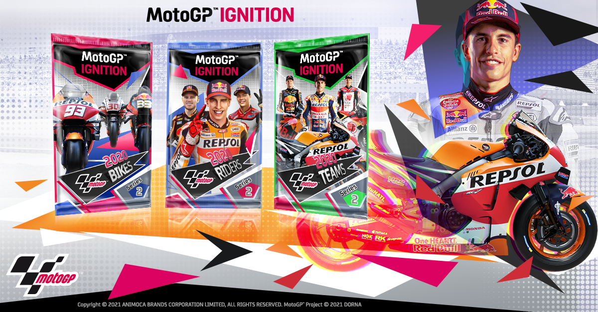

Decentology ▪ Software Architect & Blockchain Developer
September 2020 - Present
Description
I was lucky enough to begin my journey with Decentology in September of 2020, and I have been working here ever since. I am currently serving as the lead Cadence developer, which is the smart contract language for the Flow blockchain.
Up to this point, my achievements have included designing, architecting, and implementing the smart contracts, transactions, and scripts for MotoGP Ignition to handle the minting, trading, and buying/selling of hundreds of thousands of packs on the Flow blockchain.
Additionally, my primary focus has been architecting and implementing multiple modules for DappStarter, our main product. DappStarter is designed to help developers quickly kick off their dApp development by providing them with out-of-the-box code. The developer can select any blockchain and pre-existing module and they will have a fully working full stack application in minutes. For example, a developer might want to quickly set up a full stack application that has to do with Voting on the blockchain. They can select their desired blockchain along with the Voting module and have a completely ready-to-go app with server side tests and a UI harness.
At the moment I am mostly handling anything related to development on the Flow blockchain. The wonderful thing about a smaller team, though, is that I am also a part of developing on Ethereum, product development, product strategy, and many things in the business environment, so I have gotten to learn so so much!! I am very grateful.